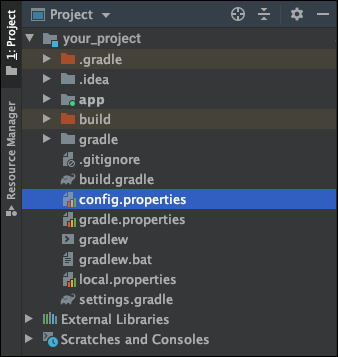

왜 환경변수를 코드에서 분리해야할까?
많은 어플리케이션이 Google, Facebook과 같은 SNS 계정을 통한 로그인을 지원합니다. 개발자는 SNS 로그인 API를 사용하기 위해 키(Key)를 발급받는데, 이를 소스코드에 포함시키면 여러 보안 이슈가 발생할 수 있습니다.
properties 파일을 사용하면 민감한 데이터를 코드에서 분리하여 이 파일에 저장할 수 있습니다.
.properties 파일 만들기
프로젝트의 루트 디렉토리에 config.properties파일을 생성합니다.

config.properties1
2
| CLIENT_ID="your_client_id"
CLIENT_SECRET="your_client_secret"
|
모듈 수준의 build.gradle 설정하기
build.gradle에서 다음과 같이 config.properties파일을 읽어올 수 있습니다.
build.gradle1
2
3
| def configPropertiesFile = rootProject.file("config.properties")
def configProperties = new Properties()
configProperties.load(new FileInputStream(configPropertiesFile))
|
이제 configProperties['your_key']형태로 값을 읽어올 수 있습니다.
build.gradle1
2
3
4
5
6
7
8
9
10
11
12
13
14
15
16
17
18
19
20
21
22
| def configPropertiesFile = rootProject.file("config.properties")
def configProperties = new Properties()
configProperties.load(new FileInputStream(configPropertiesFile))
android {
defaultConfig {
applicationId "com.example.simple_memo"
minSdkVersion 21
targetSdkVersion 30
versionCode 1
versionName "1.0"
testInstrumentationRunner "androidx.test.runner.AndroidJUnitRunner"
resValue "string", "CLIENT_ID", configProperties['CLIENT_ID']
resValue "string", "CLIENT_SECRET", configProperties['CLIENT_SECRET']
buildConfigField("String", "CLIENT_ID", configProperties['CLIENT_ID'])
buildConfigField("String", "CLIENT_SECRET", configProperties['CLIENT_SECRET'])
}
}
|
소스코드에서 값을 사용하기
이제 소스 코드에서 사용할 수 있습니다.
MainActivity.kt1
2
3
4
5
6
7
8
9
| class MainActivity : AppCompatActivity() {
override fun onCreate(savedInstanceState: Bundle?) {
super.onCreate(savedInstanceState)
setContentView(R.layout.activity_main)
val clientId = BuildConfig.CLIENT_ID
val clientSecret = BuildConfig.CLIENT_SECRET
}
}
|
xml 파일에서 값을 사용하기
xml 파일에서도 접근할 수 있습니다.
1
2
| <TextView android:text="@string/CLIENT_ID"/>
<TextView android:text="@string/CLIENT_SECRET"/>
|
.gitignore파일에 추가하기
보통 .properties파일처럼 민감한 데이터가 포함된 파일은 원격 저장소에 업로드하지 않습니다. .gitignore에 config.properties파일을 추가합시다.
.gitignore